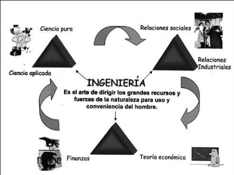

Motor de combustión

Vehículo
Desde el punto de vista de la formación integral, la ingeniería no es solamente el conocimiento de matemáticas, física, química y biología, como bien se afirma en las diferentes definiciones de ingeniería expresadas en capítulos anteriores. La ingeniería comprende otros aspectos, como se muestra a continuación
Cuando aparecieron las primeras escuelas de ingeniería se consideraba, erróneamente, que la
ingeniería era básicamente el estudio y la aplicación de las ciencias básicas (matemáticas y
ciencias naturales), acompañadas de algunas técnicas, normalmente derivadas de las ciencias
básicas, para la creación y el diseño de obras, estructuras, dispositivos y procesos para
satisfacer ciertos deseos o para dar solución a determinados problemas de la humanidad.
Hasta hace algunos pocos años, se decía, que un ingeniero no debía preocuparse por los
aspectos humanísticos, administrativos y financieros, lo cual hacía que el ingeniero fuera un
profesional que realizaba sus obras sin tener en consideración los contextos humanos, sociales
y económicos.
Se consideraba al ingeniero como un profesional “cuadriculado” (haciendo referencia a las
Motor de combustión
Vehículo
También resulta casi cierto que los ingenieros civiles y arquitectos, es decir, los primeros
ingenieros (el Instituto de Ingenieros Civiles de Gran Bretaña se organizó hace más de siglo y
medio; en esa época “ingeniero civil” quería decir cualquier ingeniero que no estuviese
directamente relacionado con trabajos militares), a pesar de crear y construir obras para el
hombre, en el momento mismo de ejecutar sus obras no tenían contacto con personas diferentes
a los obreros, a quienes por lo demás consideraban de segunda categoría (recuérdese que los
primeros obreros de la construcción de las obras de la antigüedad eran los esclavos y los
presos).
En cuanto a la administración del recurso económico y a la administración de la organizaciónrequerida para desarrollar los proyectos de ingeniería, estos son conceptos relativamente
modernos, prácticamente desconocidos en el momento de la creación de las primeras escuelas
formales de ingeniería. En otras palabras, en la formación de los primeros ingenieros,
educados formalmente como tales, se privilegiaba la parte técnica, dejando de lado como un
aspecto secundario el componente social-humanístico y el económico-administrativo.
Con la aparición de las teorías económicas modernas, humanísticas y administrativas, así
como con el surgimiento de nuevas especialidades de la ingeniería, como la ingeniería de
sistemas, la ingeniería industrial y recientemente ingenierías como la administrativa,
financiera y comercial, entre otras, las cuales tienen un alto contenido económicoadministrativo y sociohumanístico, los académicos comenzaron a entender que la disciplina de
la ingeniería es algo más que matemáticas y ciencias naturales, y agregaron a los currículos de
ingeniería aspectos tan importantes como la economía, las finanzas, la relaciones sociales y
los aspectos humanos.
Especial aporte a este nuevo enfoque en la formación de un ingeniero fue la contribución de un
educador y visionario, el ingeniero civil Hardy Cross (1885-1959) varias veces mencionado,
creador del método de Cross, con el cual están familiarizados los estudiantes y profesionales
de la ingeniera civil, cuando expresa que: “Se acostumbra considerar a la ingeniería como
parte de una trilogía: ciencia pura, ciencia aplicada e ingeniería”, trilogía que a su vez es parte
de un conjunto de tres trilogías. Las otras dos trilogías que conforman la trilogía principal,
son: “teoría económica, finanzas e ingeniería y relaciones sociales, industriales e ingeniería”
Cross. Los componentes de la ingeniería,
entonces son:
Matemáticas, física, química y biología, es decir la base científica de la disciplina,
representada normalmente por los descubrimientos de los científicos de los principios y leyes
que explican el comportamiento de los fenómenos naturales y del funcionamiento del universo.
Este componente de la ingeniería resulta evidente cuando se analiza cualquiera de las
definiciones expuestas en apartados anteriores de este capítulo, donde fácilmente se puede
apreciar que la ingeniería tiene como propósito fundamental el desarrollo y la utilización de
los materiales y las leyes de la naturaleza para diseñar soluciones a algunos problemas (o
deseos) que aquejan a la humanidad en un momento dado. Entonces se puede afirmar que el
mejor ingeniero es aquel que interpreta, entiende y que ha aprendido a hablar el lenguaje de la
naturaleza. “Toda la naturaleza está tratando de decir algo sobre como actúan sus fuerzas”
Cross.
Respecto al componente matemático, es evidente que los ingenieros pueden tratar mejor y
desarrollar sus proyectos con mayor precisión cuando estos pueden medirse, pesarse y
numerarse. El ingeniero tiene que tratar con lo imprevisible, con un sin número de fuerzas de
las cuales es necesario predecir y calcular su comportamiento. También requiere desarrollar
habilidad para predecir lo que va a ocurrir, aunque no tenga antecedentes previos de la
existencia del fenómeno involucrado en sus diseños o de la posibilidad para analizar sus
consecuencias, prevenir y proyectar de acuerdo con ello. El estudio de la ciencia pura no solamente genera en el ingeniero conocimientos fundamentales
sobre el comportamiento de la naturaleza, sino que también desarrolla habilidades y destrezas
en el uso y la aplicación de las leyes y principios de las ciencias, que son la base de su
formación.
Rama de la ingeniería en la cual no se estudie con relativa profundidad la matemática, la
física, la química y la biología, no debería denominarse ingeniería, por carecer de los
fundamentos esenciales de la disciplina.
Es la aplicación inmediata de las ciencias básicas, y corresponde al cuerpo de conocimientos
básicos que los ingenieros utilizan normalmente para el diseño de un dispositivo, una máquina,
una obra o un proceso simple o complejo. Corresponde a la parte del currículo denominado
“Ciencias de la ingeniería”.
Ejemplos de este tipo de asignaturas en un currículo de ingeniería, son: Estadística, Métodos
numéricos, Materiales de Ingeniería, Estática y Dinámica, Resistencia de Materiales,
Geología, Hidrología y algunos cursos de matemáticas, física, química o biología especiales, asignaturas que están presentes en casi todas las ingenierías, independientemente de la “rama”
o especialidad que las aplique.
El científico estudia las ciencias puras con el fin de descubrir nuevas leyes, principios y
relaciones, tanto en las diferentes clases de ciencias, como en los elementos y variables que
las integran, mientras el ingeniero toma las ciencias puras, las combina y aplica (ciencias de la
ingeniería en un currículo) para diseñar y desarrollar obras, estructuras, dispositivos y
procesos, para con ellos darle solución a determinados problemas de una sociedad o de la
humanidad, ingeniería aplicada.
El estudio de las ciencias básicas, en conjunto con las ciencias de la ingeniería (ciencia
aplicada), es lo que constituye y da cuerpo a la ingeniería como disciplina. Cabe agregar a
esto la ingeniería aplicada y tecnológica, y se obtendrá cada una de las diferentes ramas en las
que se divide la disciplina de la ingeniería.
La relación y la aplicación de los anteriores conceptos en el diseño y la construcción de las
obras, estructuras, dispositivos y procesos de ingeniería completa esta trilogía, y normalmente
es lo que caracteriza la ingeniería como disciplina, distinguiéndola de las demás, como por
ejemplo de la economía, la administración o el derecho, entre otras.
Sin embargo, es necesario acotar que la física, la química, la meteorología y otras ciencias son
solo herramientas de la ingeniería, pero no son sus fines. Refiriéndose a este aspecto, Cross(
1998,p.2 ) afirma: “El profano, no obstante, como ve que los estudiantes de ingeniería
comienzan por aprender estas materias y que después el profesionista las aplica a diario,
confunde la utilidad con el objetivo, las herramientas con el destino, los medios con el
producto final” .
Segunda trilogía: ciencia económica, finanzas e ingeniería
los aspectos económicos y financieros. Los recursos con que cuenta el ingeniero son cada día
más escasos y, por lo tanto, es deber del ingeniero utilizarlos en la forma más racional
posible, desde el punto de vista económico, de su conservación y posibilidad de renovación.
Ya no es posible emprender proyectos y obras monumentales, como las pirámides de Egipto,
los majestuosos palacios del Lejano Oriente o las obras faraónicas de la antigüedad como el
Coliseo Romano, a manera de ejemplo, proyectos que demandaron la utilización
indiscriminada de grandes cantidades de recursos económicos, con los cuales seguramente
contaban los gobernantes de ese entonces. En la actual sociedad se consideraría una
desviación de recursos hacia propósitos cuyas prioridades no son tan importantes, como sí lo
es, por ejemplo, la erradicación de la pobreza, el mejoramiento de la salud y la educación, y
en general, el mejoramiento del nivel de vida de las sociedades.
Entender la “aldea global” y un “mundo globalizado” e interconectado con los avanzados
sistemas de comunicación como internet, entre otros, demanda de la formación de un ingeniero
moderno con habilidades para estar al día de los contecimientos económicos mundiales, que
muy seguramente tienen alguna incidencia y repercusión en sus proyectos. Piénsese en lo que
significa y afecta a la ingeniería, por ejemplo, un ciclo de recesión en la economía de un país
o del mundo, o la devaluación o apreciación de la moneda de su país o de otros países a los
cuales pretende vender sus proyectos. Si se aísla al ingeniero del contexto de la economía,
este no pasará de ser un excelente técnico que aplica con destreza sus conocimientos de
matemáticas y ciencias naturales para el diseño y el desarrollo de obras, objetos, procesos o
dispositivos de muy alta calidad técnica, sin una relación apropiada con el beneficio para las
cuales fueron creadas.
En los comienzos de las primeras escuelas de ingeniería no se hablaba de aspectos contables,
económicos y financieros. Según la antigua concepción de ingeniería, el manejo de los
aspectos financieros estaba reservado para contadores y economistas, o para los hombres de
negocios; el ingeniero solamente debía preocuparse de que sus obras fuesen funcionales,
estables, resistentes y eventualmente estéticas, dejando el manejo de los recursos monetarios
al dueño de la obra o a los asesores financieros de este, de ahí que muchas obras resultaban
sumamente costosas y a veces quedaban inconclusas por falta de capital para terminarlas.
Fue solamente con la aparición de las teorías administrativas de Taylor y Fayol, y en la
actualidad de la ingeniería industrial y las llamadas ingenierías administrativas, cuando se
comenzó a ver la ingeniería no solo como un asunto puramente técnico, sino también como una
actividad que involucra en todo momento aspectos económicos y financieros, razón por la cual
los modernos currículos de ingeniería incluyen,independientemente de la rama o especialidad,
ahora en sus planes de estudio al menos una o dos asignaturas relacionadas con el manejo de
los recursos económicos o de capital, es decir, los aspectos contables y financieros de la
actividad Ingenieril.